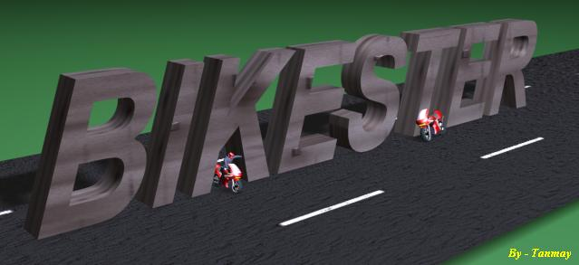

> FEATURES :-
1. Transparent
Bitblts
I think most 2D games that dont use direct X have to use this system.
But I had to use Pictureboxes to store Bitmap DCs. It would have been
better if I had used DCs directly.
2. Cool Bike
and Bike speed Kinetics
The Bike dyanamics is a feature which was main concept behind the
program. The bike speed increase and decrease very realistically. There
is a value called
friction
according to which bikes speed decreases when accelerator is not
pressed. The decrease value also depends on the present speed.
consider:
Speed = Speed - Speed*friction
This is very
close to what happens in real life. So the kinetics seem real.
Collision detection done on rectangle basis and pixelwise collision is
not used because i did not fell its real requirenment as such(all
vehicles represent rectangles more or less).
3. Great Sounds
The Sound engine is very good. It has 10 streams in all. each
different. 10 streams were more than i needed so features like
Restoring prev. souds are absent. But what i dont like about the sound
system is that i have used a windows mediaplayer contol as a stream.
this sound unprofessional. But I couldn't find a alternate
solution aupporting multiple systems. This is a area where i require
help from all programmers out there.
Another good thing about the sounds is that the bikeengine volume
increases according to bikespeed(In case you haven't noticed yet , next
time see to it). So when bike is going slow the sounds are slow
and so on.
4. Robust
Menu System
I can't belive I developed such a good Menu System(I am not that Good).
Adding items to the menu is so Simple. If you studt the code you will
find out.
5. Enjoyble Gameplay
You must me knowing
better than me about this one. Still i can say this Game isn't that
boring
6.
All resources Loaded from Single file.
This feature Which I developed
separately came handy here. this is the .trs structure. You will find
that the graphics used in the game are not directly present in
the game directory. They are combined into the Pictures.trs file. when
the game is loaded a new folder is created all files copyied into
it. Graphics are loaded From here and if the game is exited
properly then this folder is deleted at the end and drive space is
freed. This system is used by most professional games(You wont find the
pictures in Age of Empires). If you Want the code for the program to
dit the trs files then see if i have submitted it at www.planet-source-code.com or
mail me at getfun2004@yahoo.com
But most of the source code is present in this game itself as
"clstrs.cls" file.. This archive structure is ok but there are some
drawbacks like it offers no compression and can get slow if worked on
large files. And the program is not doccumented or commented now.
7. A Level Editor.
Levels have ini file structure and
all levels are strored in the levels.blv file. the editor can edit all
attributes of a level. but it is undoccumented . i will try to
doccument if i release next version . But you can always ask for help.
>
A WORD FORM ME:-
I express my hearty thanks to all the people whose code, ideas ,
models etc. I have borrowed. Here are some who i can Remember.
Bike Model- From the Net but Cannot remember site
Bike Sounds - some racing game.
Please help me if you can with this- Sometimes(only sometimes)
the frame rate drops very low on my computer although no other programs
are running in the background. The frame rate does not increase till I
run any other Direct X game and quit it. To rectify it what i did is I
initialised DirectX and terminted it immediately(coz it is not used in
the game) But i want to know What really happens. How directX releases
resources that GDIFlush function does not. If you can help me then help.
Last of all dont forget to vote or send comments at getfun2004@yahoo.com. If i get
enough responce then i will try to add some more features like effects,
more vehicles etc.